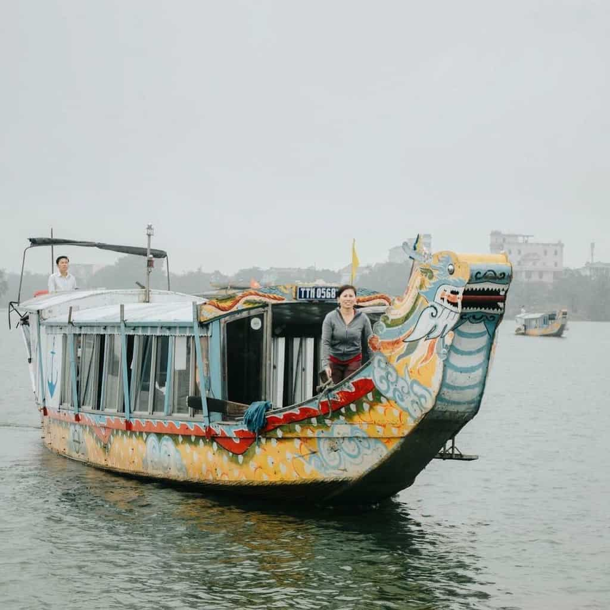
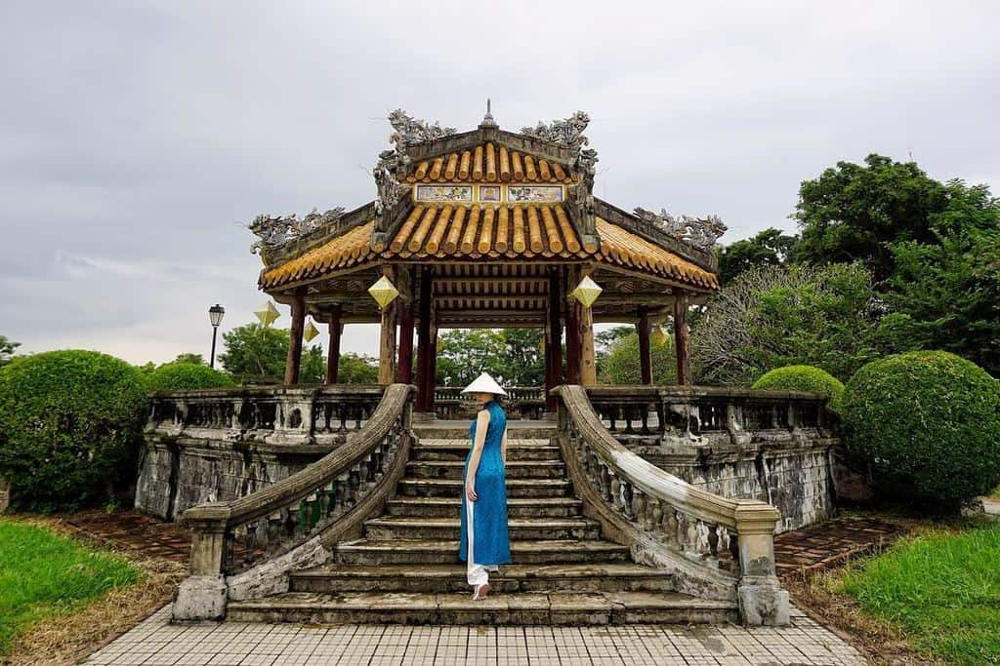

Dường như mỗi thành phố của Việt nam đều có một biệt danh riêng: Hà Nội nghìn năm văn hiến, Sài Gòn hòn ngọc viễn Đông, còn Huế thì lại là xứ sở mộng mơ, là mảnh đất cố đô dù đã trải qua trăm năm nhưng vẫn nguyên vẻ cổ kính, dịu dàng, đắm thắm như thời gian vẫn luôn đi chậm lại nơi đây.
Thế nhưng Huế không chỉ có những di tích xưa cũ. Là trung tâm của dải đất miền Trung, tỉnh Thừa Thiên – Huế nói riêng và thành phố Huế nói chung còn được thiên nhiên ưu ái khi nằm lọt thỏm giữa muôn vàn cảnh đẹp của biển, sông, núi, đèo…. Còn chờ gì nữa mà không mang theo những kinh nghiệm du lịch Huế dưới đây và bắt đầu mơ về một cuộc dạo chơi bình yên, chẳng hề vội vã, chậm rãi thưởng thức vẻ đẹp của mảnh đất kinh kỳ.
Thuộc vùng chuyển tiếp giữa hai miền Nam – Bắc nên thời tiết ở Huế là sự kết hợp giữa cả hai miền, giảm bớt phần khắc nghiệt và cũng khá ôn hòa. Mùa mưa bão ở Huế bắt đầu từ tháng 5 và kéo dài đến tháng 11, là thời gian cao điểm của các cơn bão, lụt nên cần theo dõi thời tiết trước khi thực hiện chuyến đi. Tuy Huế không có mùa đông rõ rệt như các tỉnh miền Bắc nhưng nhiệt độ cũng không cao, có thể sẽ thấp hơn 10 độ.
Theo nhiều kinh nghiệm du lịch Huế tự túc thì thời gian đẹp nhất cho chuyến tham quan là vào thời điểm giao mùa: giữa hai mùa xuân – hạ và thu – đông
Tháng 4 – tháng 5: Đây là thời điểm khí hậu ôn hòa, dễ chịu, phù hợp cho mọi hoạt động vui chơi. Đó là chưa kể cứ mỗi 2 năm/ lần, Festival Huế lại được tổ chức vào cuối tháng 4, nhằm tôn vinh các di sản văn hóa và thúc đẩy du lịch. Nếu du lịch Huế đúng thời gian này, chuyến đi của bạn đảm bảo sẽ trọn vẹn đến 200% đó nhé. Nếu bạn đi Huế vào khoảng thời gian diễn ra Festival Huế thường niên thì hãy tham khảo ngay cẩm nang du lịch Festival Huế cùng Traveloka nhé!
Mùa hoa xứ Huế: Chẳng kém cạnh Hà Nội 12 mùa hoa, Huế sở hữu không ít loài hoa quyến rũ khoe sắc quanh năm. Tháng 3, tháng 4 là mùa hoa ngô đồng; mùa hè là lúc phượng đỏ nở rực một góc trời cạnh cầu Tràng Tiền; xuyên suốt tháng 5 – tháng 8 là những đóa sen trong Hoàng Thành nở rộ… Tất cả đều góp phần vào vẻ đẹp mộng mơ của xứ cố đô.
Là thành phố lớn của miền Trung, Huế cũng có sân bay Phú Bài để thuận tiện cho việc di chuyển. Với những du khách không muốn mất quá nhiều thời gian để di chuyển thì cách nhanh chóng nhất là mua một tấm vé máy bay đi Huế, thư giãn trên bầu trời khoảng 1 giờ là đã đến nơi.
Bay TP. HCM đi Huế chỉ trong “chớp mắt” 30 phút, với giá vé từ 400.000 VND/ chiều.
Bay Hà Nội đi Huế thời gian cũng chỉ tầm 1 giờ, giá vé từ 730.000 VND/ chiều.
Sân bay Phú Bài cách trung tâm thành phố 15 km nên khi hạ cánh, có hai cách để di chuyển vào thành phố:
Thuận lợi nhất là bắt taxi với giá khoảng 250.000 VND/ chuyến.
Còn nếu không lỉnh kỉnh hành lý thì xe trung chuyển sân bay là cách di chuyển tiết kiệm hơn với giá chỉ 40.000 – 50.000 VND/ khách/ lượt.
Xe lửa là một phương tiện du lịch thú vị cho những ai muốn dành thời gian chiêm ngưỡng vẻ đẹp hai bên đường. Bạn có thể tham khảo giờ và chuyến tàu phù hợp tại đây.
Xe lửa Hà Nội – Huế có giá từ 300.000 – 955.000 VND/ chiều/ khách, di chuyển trong khoảng 14 giờ.
Xe lửa Sài Gòn – Huế có giá đắt hơn từ 400.000 – 1.050.000 VND/ chiều/ khách, thời gian chạy khoảng từ 18 giờ đến 22 giờ.
Nếu kết hợp du lịch Huế – Đà Nẵng thì bạn có thể tiết kiệm kha khá thời gian và ngân sách khi xe lửa từ Đà Nẵng đi Huế chỉ mất 3 giờ và có giá dao động 50.000 – 120.000 VND/ chiều/ khách.
Phương tiện di chuyển có lẽ là một trong những điều cuối cùng bạn phải lo lắng khi tìm hiểu về các kinh nghiệm du lịch Huế. Thành phố này có vô vàn cách thức để bạn khám phá, mà lại vô cùng sẵn có và tiện lợi.
Xe máy: Đứng đầu danh sách, đặc biệt là với cư dân du lịch bụi chắc hẳn phải là thuê xe máy rồi. Là một thành phố du lịch, các dịch vụ thuê xe ở Huế đều rất đa dạng, giá phải chăng từ 100.000 – 120.000 VND/ ngày. Đơn giản nhất là bạn cứ liên hệ với các khách sạn ở Huế, đa số đều có sẵn dịch vụ này cho du khách.
Taxi: Không muốn tự lái xe xa, thì taxi sẵn sàng đồng hành bạn trên mọi cung đường. Một số hãng taxi Huế quen thuộc là Đông Ba (SĐT: 0234.3.84.84.84), Mai Linh (SĐT: 0234.3.89.89.89), Phú Xuân (SĐT: 0234.3.87.87.87), Thành Công (SĐT: 0234.3.57.57.57)
Xe ô tô: Nếu có bằng lái thì thuê một chiếc ô tô để cả gia đình hoặc nhóm bạn cùng vi vu cũng rất thú vị đó nhé. Giá thuê ô tô tại Huế sẽ khoảng 500.000 – 900.000 VND/ ngày.
Xe đạp: Huế mộng mơ và nhịp sống chậm rãi là nơi không thể lý tưởng hơn để bạn thuê một chiếc xe đạp dạo quanh thành phố. Giá thuê lại vô cùng phải chăng, chỉ 20.000 – 30.000 VND/ chiếc/ ngày.
Xích lô: Những chiếc xích lô nay đã hiếm thấy thì vẫn còn hoạt động khá nhộn nhịp tại các thành phố du lịch nổi tiếng. Giá xích lô cũng rất “kinh tế”, 15.000 – 20.000 VND/ người/ giờ cho một chuyến khám phá, lại có người địa phương kể cho bạn nghe những câu chuyện hay ho. Một điểm lưu ý là xích lô ở Huế không có một đơn vị thống nhất mà là những người chạy xe riêng lẻ nên bạn cần thống nhất giá trước khi lên xe nhé.
Giờ tham quan: Mùa hè: Từ 6:30 đến 17:30 Mùa đông: từ 7:00 đến 17:00 Giá vé tham quan: 150.000 VND/ người/ lượt.
Giờ tham quan: Mùa hè: Từ 6:30 đến 17:30 Mùa đông: từ 7:00 đến 17:00 Giá vé tham quan: 150.000 VND/ người/ lượt.